# Capitulo 7
## Medios de Transmisión Un medio de transmision puede definirse como cualquier cosa que puede llevar informacion desde una fuente a un destino 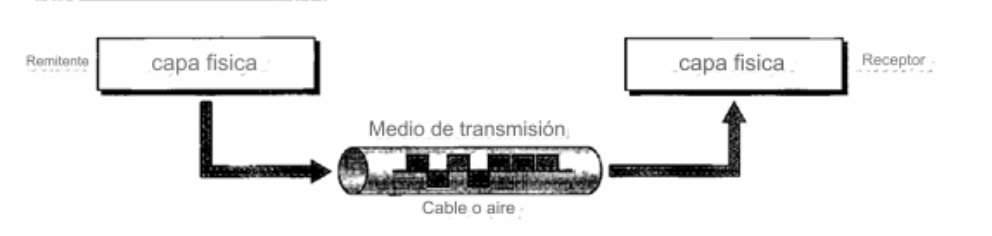
## Se pueden dividir en dos grandes categorias; - Guiados: Incluyen el par trenzado, cable coaxial y cable de fibra optica - No guiados: Es el espacio libre
## Medios Guiados 7.1 Son aquellos que proporcionan un conducto de un dispositivo a otro.
### Cable de par trenzado Consta de dos conductores (mayormente cobre), cada uno con su propio aislamiento plastico, trenzados entre si 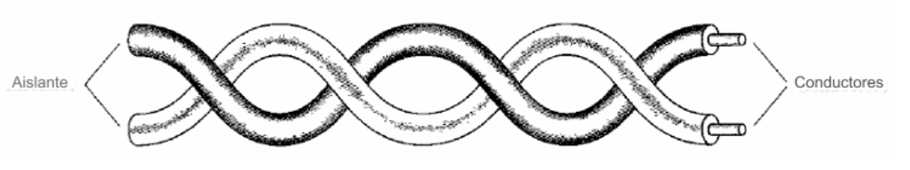 Uno de los cables lleva señales al receptor y el otro se usa solo como referencia de tierra.
### Par trenzado blindado - Tiene una lamina metalica que cubre cada par de conductores aislados. - Mejora la calidad del cable y evitar el ruido o diafonia ### Categorias Se determinan segun la calidad del cable, siendo 1 la mas baja y 7 la mas alta.
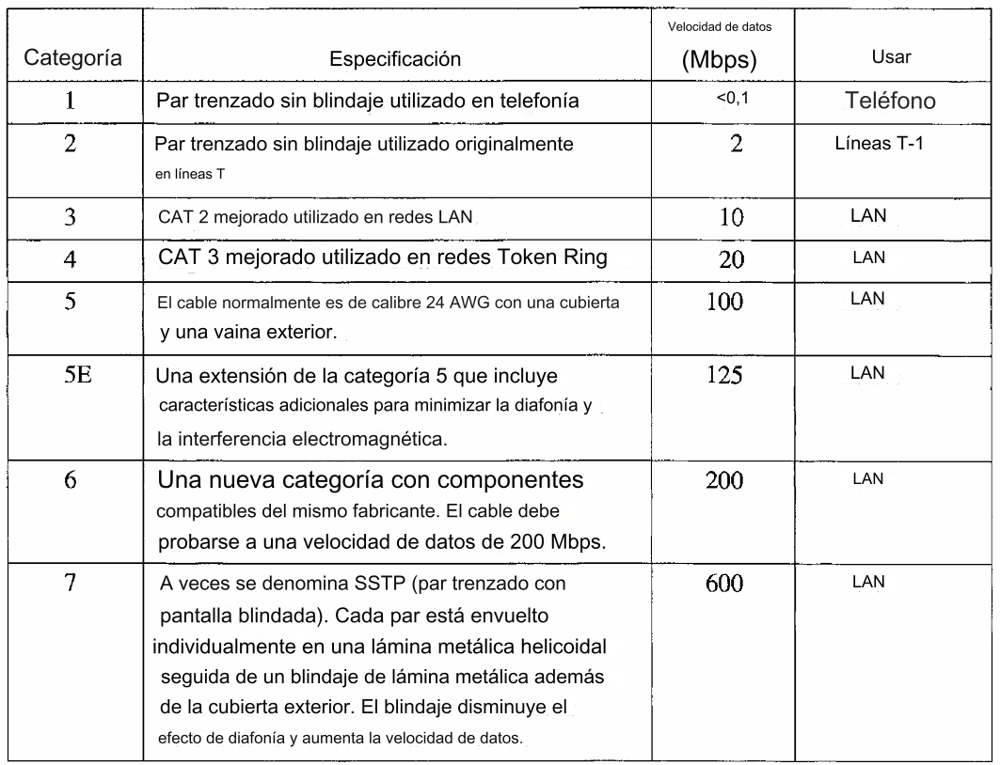
## Conectores El conector mas comun para el UTP es el RJ45 Es un conector codificado, es decir, que solo se puede insertar de una sola manera 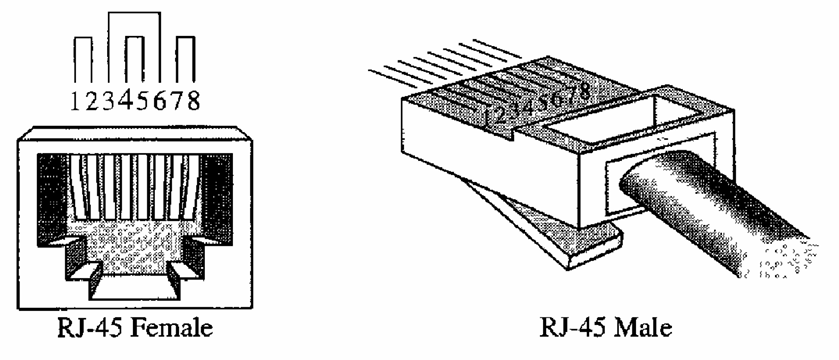
## Cable Coaxial Consta de dos cables, tiene un conductor central de cable trenzado envuelto en una funda aislante que esta revstida por una lamina metalica. La envoltura exterior sirve para la proteccion contra el ruido . 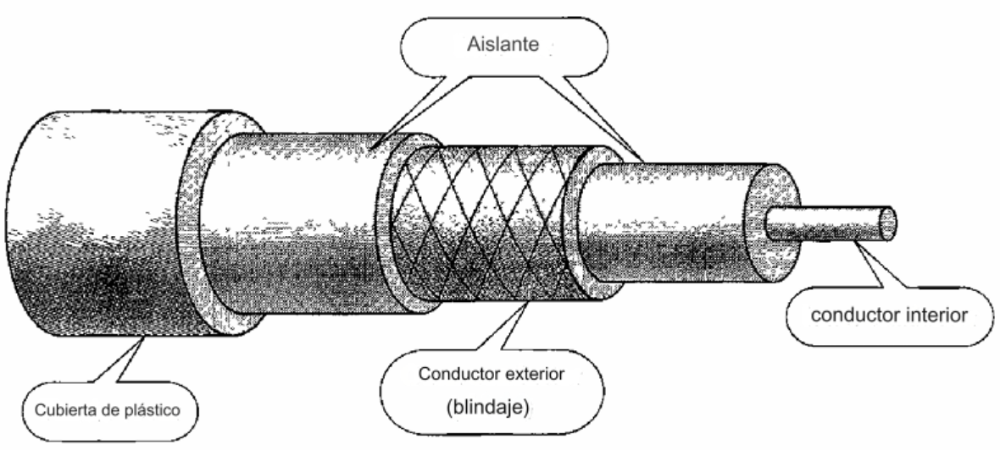
## Normas de cable coaxial Se clasifican segun su clasificacion de gobierno de radio (RG) <br> Cada cable definido por una clasificacion RG tiene una funcion especializada 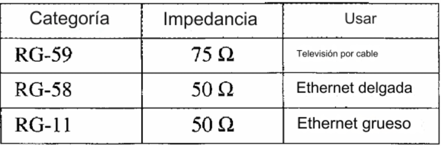
## Conectores de cable coaxial Para conectar un cable coaxial a los dispositivos, necesitamos conectores coaxiales. El tipo de conector más común que se usa es el conector Bayone-Neill-Concelman (BNC). <br> 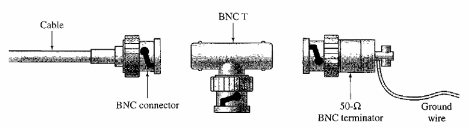 <br> El conector BNC T se usa en redes Ethernet para derivar la señal a una computadora u otro dispositivo.
## Cable de fibra óptica Está hecho de vidrio o plástico y transmite señales en forma de luz. <br> La diferencia de densidad debe ser tal que un haz de luz que se mueve a través del núcleo se refleje en el revestimiento en lugar de refractarse en él. 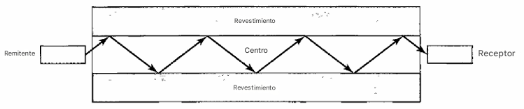
## Modos de propagación Admite dos modos (multimodo y monomodo) para propagar la luz por los canales ópticos, cada uno requiere fibras con características físicas diferentes. <br> El modo multimodo se puede implementar en dos formas: índice escalonado o índice graduado. 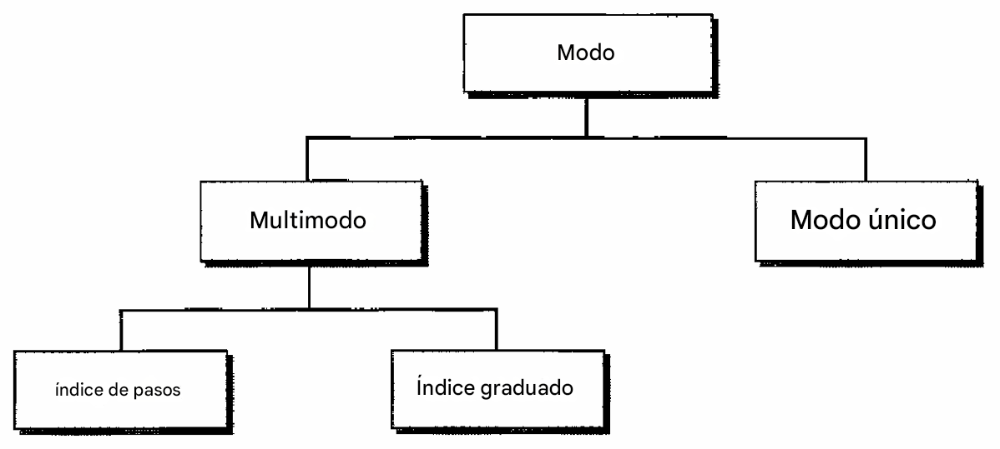
### Multimodo Varios haces de una fuente de luz se mueven a través del núcleo en diferentes trayectorias. <br> La forma en que estos haces se mueven dentro del cable depende de la estructura del núcleo ### Multimodo indice graduado Es una fibra con densidades variables. La densidad es más alta en el centro del núcleo y disminuye gradualmente hasta su nivel más bajo en el borde.
### Monomodo Utiliza fibra de índice escalonado y una fuente de luz enfocada que limita los haces a un pequeño rango de ángulos. <br> La disminución de la densidad da como resultado un ángulo crítico que está lo suficientemente cerca de 90° para hacer que la propagación de los haces sea casi horizontal.
## 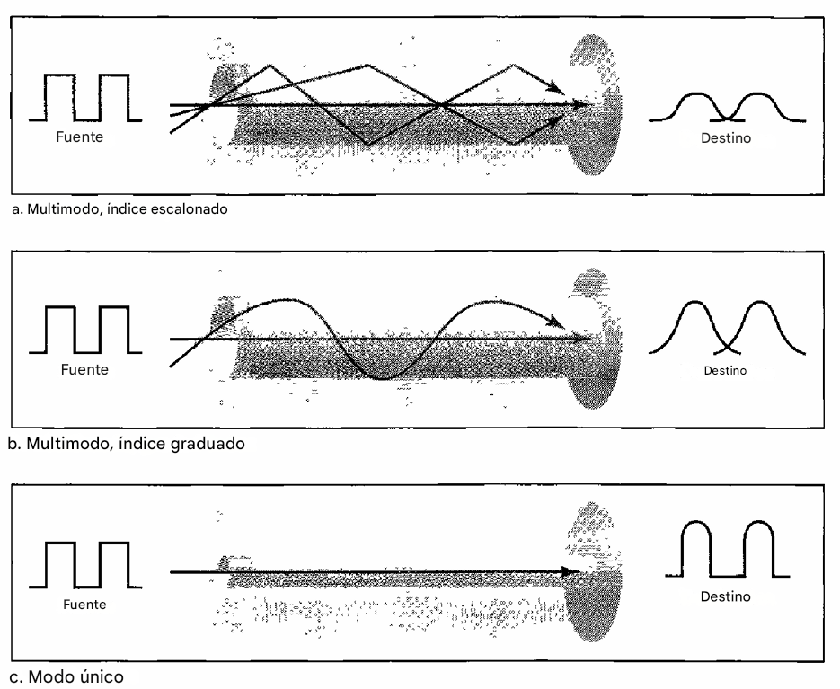
## Tamaños de fibra Se definen por la relación entre el diámetro de su núcleo y el diámetro de su revestimiento, ambos expresados en micrómetros. 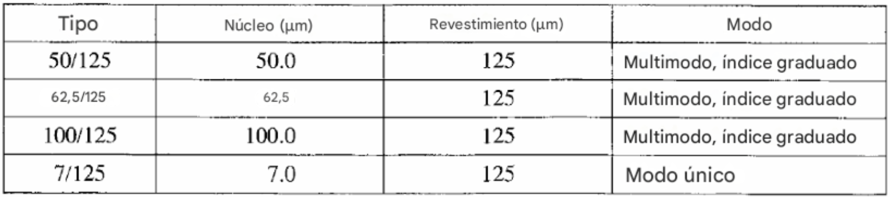
### Composición de cables La cubierta exterior está hecha de PVC o teflón. <br> En el interior de la cubierta hay hilos de Kevlar para reforzar el cable. Debajo del Kevlar hay otro revestimiento de plástico para amortiguar la fibra. La fibra está en el centro del cable y consta de revestimiento y núcleo. <br> 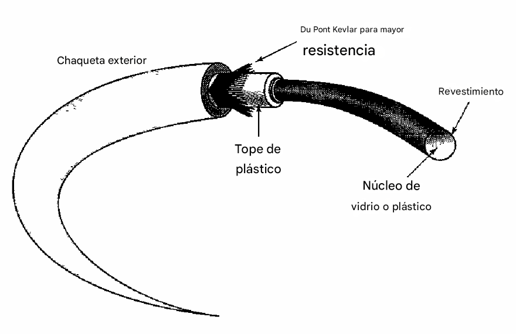
### Conectores de cable de fibra óptica 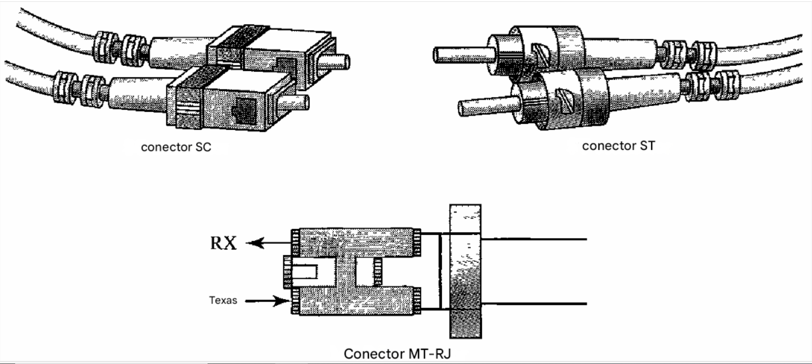
### Ventajas y desventajas de la fibra óptica | Ventajas | Desventajas | |--------------------------------|---------------------------------| | Mayor ancho de banda |Costoso y difícil de instalar | | Menor atenuación de la señal |Propagación de luz unidireccional| | Inmunidad a interferencias |Instalación y mantenimiento | | Resistencia a la corrosión | |
## MEDIOS NO GUIADOS: INALÁMBRICO Transportan ondas electromagnéticas sin utilizar un conductor físico. <br> Este tipo de comunicación se conoce a menudo como comunicación inalámbrica. <br> Las señales se transmiten a través del espacio libre y, están disponibles para cualquier persona que tenga un dispositivo capaz de recibirlas.
### Bandas Las ondas de radio y microondas se divide en ocho rangos, denominados bandas. Estas bandas se clasifican desde frecuencias muy bajas (VLF) hasta frecuencias extremadamente altas (EHF)
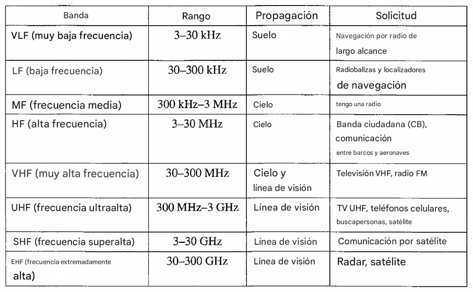
## Ondas de radio - Las ondas de radio, en su mayor parte, son omnidireccionales. - Cuando una antena transmite ondas de radio, estas se propagan en todas las direcciones. - Las ondas de radio, en particular las que se propagan en el cielo, pueden viajar grandes distancias. - El uso de cualquier parte de la banda requiere el permiso de las autoridades.
### Microondas - Las ondas electromagnéticas que tienen frecuencias entre 1 y 300 GHz se denominan microondas. - Las microondas son unidireccionales. - La propagación se produce en línea de visión. - Las microondas de muy alta frecuencia no pueden atravesar paredes. - La banda es relativamente amplia, casi 299 GHz. - El uso de ciertas partes de la banda requiere permiso de las autoridades.
### Antena unidireccional Las microondas necesitan antenas unidireccionales que envíen señales en una dirección. Para las comunicaciones por microondas se utilizan dos tipos de antenas: la antena parabólica y la antena de bocina. <br> 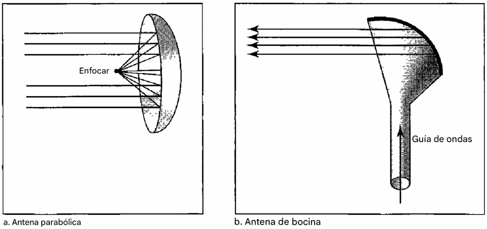
### Infrarrojo - Las ondas infrarrojas, con frecuencias de 300 GHz a 400 THz (longitudes de onda de 1 mm a 770 nm), se pueden usar para la comunicación de corto alcance. <br> - Las ondas infrarrojas, que tienen frecuencias altas, no pueden atravesar paredes.
# GRACIAS